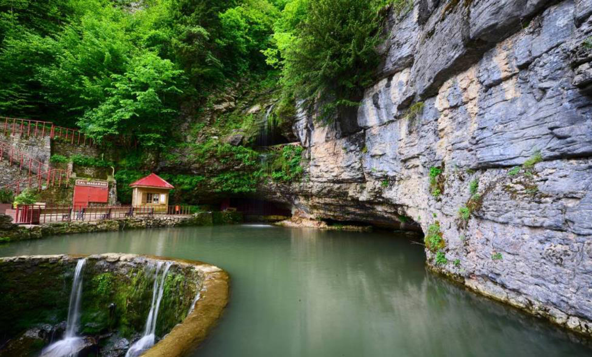

Trabzon Hakkında
Trabzon, Karadeniz Bölgesi'nin en güzel şehirlerinden biridir. Zengin tarihi, doğal güzellikleri ve deniz kenarındaki lokasyonuyla ünlüdür. Sümela Manastırı, Uzungöl ve Trabzon Kalesi gibi yerleriyle dikkat çeker.
Gezilecek Yerler
- Sümela Manastırı
- Uzungöl
- Trabzon Kalesi
- Atatürk Köşkü
- Boztepe
Turlar
Trabzon'da yapabileceğiniz aktiviteler ve turlar:
- Sümela Manastırı Turu
- Uzungöl Turu
- Trabzon Kalesi Turu
- Doğa Yürüyüşü ve Kamp Turu
Fiyat Bilgisi
Trabzon'da sunulan tur hizmetlerinin ortalama fiyatları:
- Sümela Manastırı Turu: 300 TL
- Uzungöl Turu: 350 TL
- Trabzon Kalesi Turu: 250 TL
- Doğa Yürüyüşü ve Kamp Turu: 400 TL